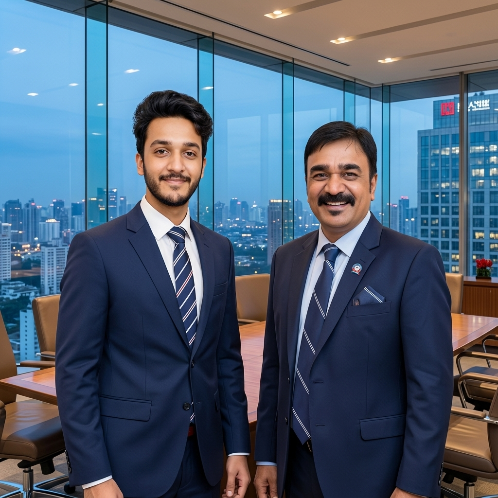

Organised by Jaipuria Institute of Management, Jaipur
HR & Marketing Conclave 2026
Human Intelligence Meets Artificial Intelligence
"Redefining Work, Brands, and Growth"
Neeraj Bhardwaj
Director & CEO, Blue Wisdom
The "Tick-Mark" Illusion
Vanity Metrics vs. Actual Business Impact
1. The Corporate Trap
HR proudly tracks vanity metrics: "5 days of sessions, 2 hours daily, 100% attendance." But business impact remains completely flat.
2. Kirkpatrick Level 4 Assessment
Did it improve business KPIs? Did productivity scale? Real capability training requires measurable performance alignment.
💡 Speaker Pro-Tip
Tell the Ahmedabad Management Association client story here to hook the audience instantly.
🎯
Shift the Paradigm
"Training is not about finishing a checklist. It's about moving a business metric."
The AI Coach vs. Human Coach
Flight Simulator vs. Flying in a Storm
1. The Simulator: AI-Driven Practice
AI is an incredible flight simulator. It is a risk-free zone where a manager can practice hard conversations and crash the plane 50 times without consequences.
2. The Storm: Real Human Emotion
A hard conversation with an underperformer is flying in real turbulence. The simulator has no fear; a human coach sits next to you as the co-pilot with real skin in the game.
✈️
The Co-Pilot Principle
"AI coaches you on the mechanics; a human coach navigates the turbulence."
Dismantling Data Security Concerns
आप डिसाइड करो: नदी का घाट या पर्सनल बाथरूम?
1. Public LLMs (The Riverbank)
Sharing company IP with public chatbots is like bathing on a public riverbank—anyone can watch, and your data is trained on by the world.
2. Enterprise AI (The Private Bathroom)
Closed-loop, ring-fenced enterprise environments operate in a private, secure bathroom. Your data stays entirely yours.
🚿
Enterprise Governance
"Data leakage isn't an AI problem; it's a governance problem."
Interactive Audience Probing
What is your organization's biggest roadblock to AI adoption?
A. Skill Gap & Lack of Awareness
Teams simply do not know how to write prompts or align AI with business tasks.
B. Data Leakage & Security Phobia
Fears that private business data will be exposed to public tools.
C. Cultural Resistance & Attrition Fears
"If I use AI, will it replace my job?"
Interactive Capability Objectives
Aligning human intellect with AI capability
1. Move Past the Hype
Identify where AI actually makes a difference in business outcomes (not just chatbot fun).
2. Demystify the Technology
Help leadership understand the ring-fencing of data and structural model capabilities.
3. Establish the Capability Blueprint
Formulate the 30-60-90 day integrated roadmap for HR and Marketing teams.

AI in HR: Practical Use Cases
Unbiased Screening, Personalized L&D, and Attrition Prediction
Category
AI Application & Business Impact
Recruitment
Unbiased Screening: Strips demographics, matches on skills. Unilever saw time-to-hire drop by 40%.